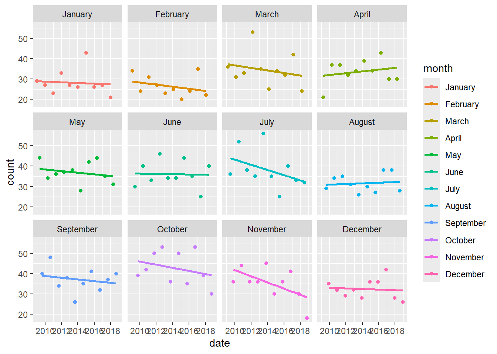
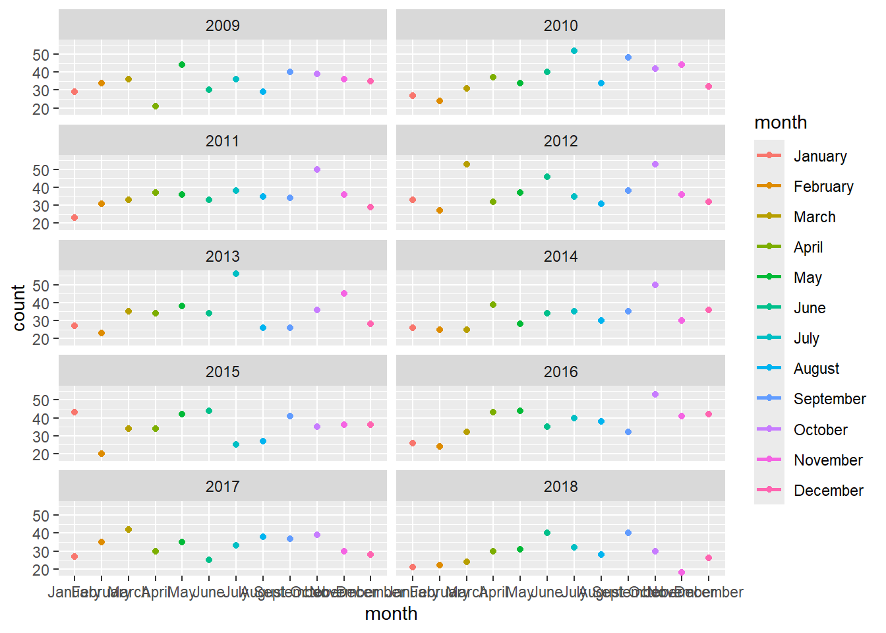

library(tidyverse)
library(here)
library(socviz)Week 06 Problem Set: Traffic Fatalities
The data are from the Federal Accident Reporting System run by the National Highway Traffic Safety Administration. We have two datasets.
First Table
The first table was downloaded from this URL: https://www-fars.nhtsa.dot.gov/States/StatesCrashesAndAllVictims.aspx. At the time of writing, it’s the table labeled “Person Killed, by STATE and Age Group - State : USA, Year : 2023”. I downloaded the Excel file and very slightly cleaned it up. It is in the data/ folder of this project as fars-persons-killed-by-state-and-age-2023.csv.
First we read in the data:
df_state <- read_csv(here("data", "fars-persons-killed-by-state-and-age-2023.csv"))Rows: 51 Columns: 14
── Column specification ────────────────────────────────────────────────────────
Delimiter: ","
chr (1): State
dbl (13): < 5, 5 -- 9, 10 -- 14, 15 -- 20, 21 -- 24, 25 -- 34, 35 -- 44, 45 ...
ℹ Use `spec()` to retrieve the full column specification for this data.
ℹ Specify the column types or set `show_col_types = FALSE` to quiet this message.df_state# A tibble: 51 × 14
State `< 5` `5 -- 9` `10 -- 14` `15 -- 20` `21 -- 24` `25 -- 34` `35 -- 44`
<chr> <dbl> <dbl> <dbl> <dbl> <dbl> <dbl> <dbl>
1 Alabama 7 4 11 88 57 199 161
2 Alaska 1 0 0 3 7 10 12
3 Arizona 5 6 25 104 99 245 205
4 Arkans… 6 3 11 50 50 96 95
5 Califo… 25 30 33 326 358 860 658
6 Colora… 3 3 11 85 54 146 113
7 Connec… 3 0 2 22 39 58 59
8 Delawa… 4 1 0 10 11 32 19
9 Distri… 0 0 0 2 6 13 6
10 Florida 31 29 34 268 218 620 505
# ℹ 41 more rows
# ℹ 6 more variables: `45 -- 54` <dbl>, `55 -- 64` <dbl>, `65 -- 74` <dbl>,
# `> 75` <dbl>, Unknown <dbl>, Total <dbl>Task 1: Cleaning
A. The Age categories are spread across the columns, from < 5 to Unknown. Get them into long format so that your dataset consists of four columns named state, age and count, and total. Make sure the capitalization is correct (i.e. all lower case).
d <- df_state |>
pivot_longer(
cols = `< 5`:Unknown,
names_to = "age",
values_to = "count"
) |>
rename(state = State,
total = Total) |>
relocate(total, .after = count)B. Clean the age column to remove white space in the age categories and replace the -- with -. Also make sure < and > do not have any whitespace before or after them.
d <- d |>
mutate(age = str_trim(age) |>
str_remove_all("\\s") |>
str_replace_all("--", "-")) Task 2: Counting
A. Filter the data to show the count by state for ages five to nine
d |>
filter(age == '5-9')# A tibble: 51 × 4
state age count total
<chr> <chr> <dbl> <dbl>
1 Alabama 5-9 4 974
2 Alaska 5-9 0 60
3 Arizona 5-9 6 1304
4 Arkansas 5-9 3 596
5 California 5-9 30 4061
6 Colorado 5-9 3 720
7 Connecticut 5-9 0 308
8 Delaware 5-9 1 135
9 District of Columbia 5-9 0 44
10 Florida 5-9 29 3396
# ℹ 41 more rowsB. Make a table showing the count for each state of victims aged nine and under as single total. That is, we want the sum of ages nine and under as a single number, shown for each state. Do we lose any observations? Should we expect to? Why or why not?
d2 <- d |>
filter(age == '<5' | age == '5-9') |>
group_by(state) |>
tally(count) |>
rename(under9 = n)We “lose” observations in that now there is only 1 observation per state.
Second Table
The second dataset also comes from FARS. It has daily counts of road accident fatalities for people aged seventeen and under, for the years 2009 to 2018.
df_daily <- read_csv(here("data", "fars0-17daily.csv"))Rows: 388 Columns: 12
── Column specification ────────────────────────────────────────────────────────
Delimiter: ","
chr (2): month, day
dbl (10): 2009, 2010, 2011, 2012, 2013, 2014, 2015, 2016, 2017, 2018
ℹ Use `spec()` to retrieve the full column specification for this data.
ℹ Specify the column types or set `show_col_types = FALSE` to quiet this message.df_daily# A tibble: 388 × 12
month day `2009` `2010` `2011` `2012` `2013` `2014` `2015` `2016` `2017`
<chr> <chr> <dbl> <dbl> <dbl> <dbl> <dbl> <dbl> <dbl> <dbl> <dbl>
1 January 1 1 2 0 2 1 1 3 2 0
2 <NA> 2 1 0 0 1 0 0 1 0 0
3 <NA> 3 0 0 0 1 2 0 0 2 1
4 <NA> 4 0 0 1 4 1 1 2 1 0
5 <NA> 5 0 2 1 0 0 0 3 0 0
6 <NA> 6 1 0 0 4 0 1 0 0 1
7 <NA> 7 3 0 0 2 1 0 2 0 1
8 <NA> 8 1 2 0 0 1 1 2 0 0
9 <NA> 9 4 0 0 0 1 0 3 0 1
10 <NA> 10 1 0 0 1 2 2 0 0 0
# ℹ 378 more rows
# ℹ 1 more variable: `2018` <dbl>Task 3. Examine, clean, and reshape df_daily
A. Take a look at the data. Some of the rows need to be removed. Which ones? Remove them as you see fit.
d3 <- df_daily |>
filter(!is.na(day))B. Make it so that the month column has the correct month in every row. Hint: look at the documentation for the tidyr::fill() function to help you here.
d3 <- d3 |>
fill(month)C. Get the counts into long format with a column named year containing the year and a column named count containing the fatality counts.
d3 <- d3 |>
pivot_longer(
cols = `2009`:`2018`,
names_to = "year",
values_to = "count"
)Task 4. Dates
D. Can you use the day, month, and year columns to make a new column called date that is actually of type date?
- Hint: the
ymd()function inlubridatecan intelligently parse date strings. Usepasteto construct one of the form year-month-day.
d3 <- d3 |>
mutate(date = ymd(paste(year, month, day)))Warning: There was 1 warning in `mutate()`.
ℹ In argument: `date = ymd(paste(year, month, day))`.
Caused by warning:
! 128 failed to parse.E. Do any dates fail to parse? Can you identify why?
The only ones to fail were the monthly totals (expected, as they do not have a day) and dates that did not exist (such as Feb 29 on non-leap-years).
Task 5. Trends
Now that you’ve gotten the data in shape, explore it. Can you find any interesting patterns or trends?
d3 |>
filter(day == "Total") |>
group_by(year) |>
tally(count)# A tibble: 10 × 2
year n
<chr> <dbl>
1 2009 409
2 2010 445
3 2011 415
4 2012 453
5 2013 408
6 2014 393
7 2015 417
8 2016 450
9 2017 399
10 2018 342d3 |>
filter(day == "Total") |>
group_by(month) |>
tally(count, sort = TRUE)# A tibble: 12 × 2
month n
<chr> <dbl>
1 October 427
2 July 382
3 September 371
4 May 369
5 June 361
6 November 352
7 March 345
8 April 337
9 December 324
10 August 316
11 January 282
12 February 265d4 <- d3 |>
filter(day == "Total") |>
mutate(date = ym(paste(year, month))) |>
mutate(month = as.factor(month))
d4$month <- fct_relevel(d4$month, "January", "February", "March", "April",
"May", "June", "July", "August", "September",
"October", "November", "December")
ggplot(data = d4,
aes(date,count, color = month)) +
geom_point() +
geom_smooth(method = "lm", se = FALSE) +
facet_wrap(~month)`geom_smooth()` using formula = 'y ~ x'
ggplot(data = d4,
aes(month,count, color = month)) +
geom_point() +
geom_smooth(method = "lm", se = FALSE) +
facet_wrap(~year, ncol = 2)`geom_smooth()` using formula = 'y ~ x'